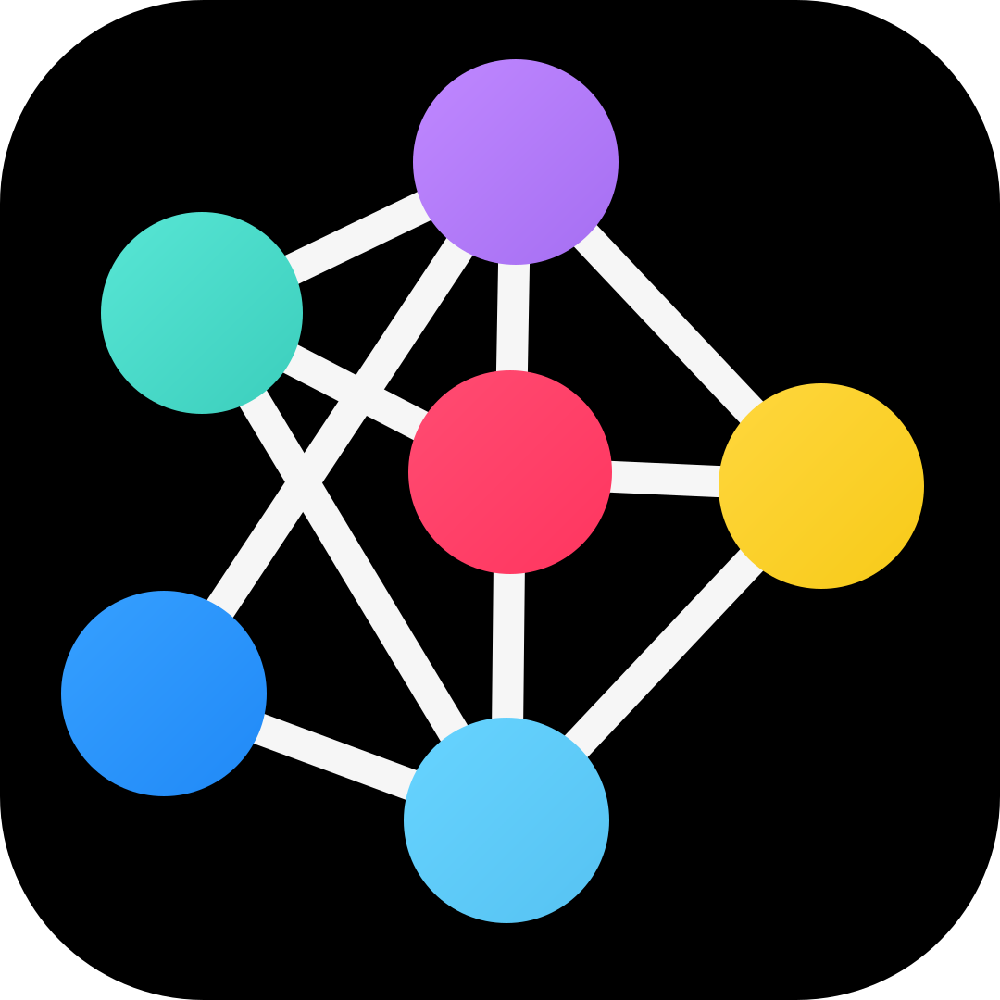

Python 코드READY

알고리줌SWEA 4202
요리사
N개의 식재료 중 절반을 A음식으로 조합하고, 나머지 절반을 B음식으로 나눕니다.
DFS 조합·백트래킹과 두 음식의 시너지 합을 비교해 맛의 차이 최솟값 ans를 찾는 과정을 따라갑니다.
식재료 · 시너지 시각화조합 전
변수와 상태READY
start0
i—
len(A)0
A_Sum0
B_Sum0
ans∞
A 음식에 들어갈 식재료 조합을 DFS로 선택합니다.
현재 조합 · 시너지 계산A 0개 · B 0개
출력실행 결과
입력2 ≤ N ≤ 16 · N은 짝수
첫 줄에 T, 각 테스트케이스마다 N과 N×N 시너지 표를 입력합니다. 식재료 번호는 화면에서 1부터 표시됩니다.
N ≤ 8은 DFS와 시너지 계산을 자세히 보여주고, 더 큰 N은 브라우저 성능을 위해 정답이 개선되는 조합 중심으로 요약하지만 계산은 끝까지 수행합니다.